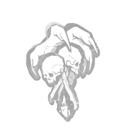

支配 Dominance
所属：黑暗领主（杀手）
| 等级 | 档位 1 | 档位 2 | 档位 3 |
|---|---|---|---|
| 数值 | 3 1 | 4 | 5 |
描述
你在土地上所施展的力量，令所有与你为敌之人心中充满恐惧。每次图腾支配触发其效果时：召唤恶灵25秒。气场呈白色。逃生者发出尖叫。逃生者的气场对你可见，持续3/4/5秒。“可悲，不是吗？你必然感到自己是何等无力。”——德古拉

所属：黑暗领主（杀手）
| 等级 | 档位 1 | 档位 2 | 档位 3 |
|---|---|---|---|
| 数值 | 3 1 | 4 | 5 |
你在土地上所施展的力量，令所有与你为敌之人心中充满恐惧。每次图腾支配触发其效果时：召唤恶灵25秒。气场呈白色。逃生者发出尖叫。逃生者的气场对你可见，持续3/4/5秒。“可悲，不是吗？你必然感到自己是何等无力。”——德古拉